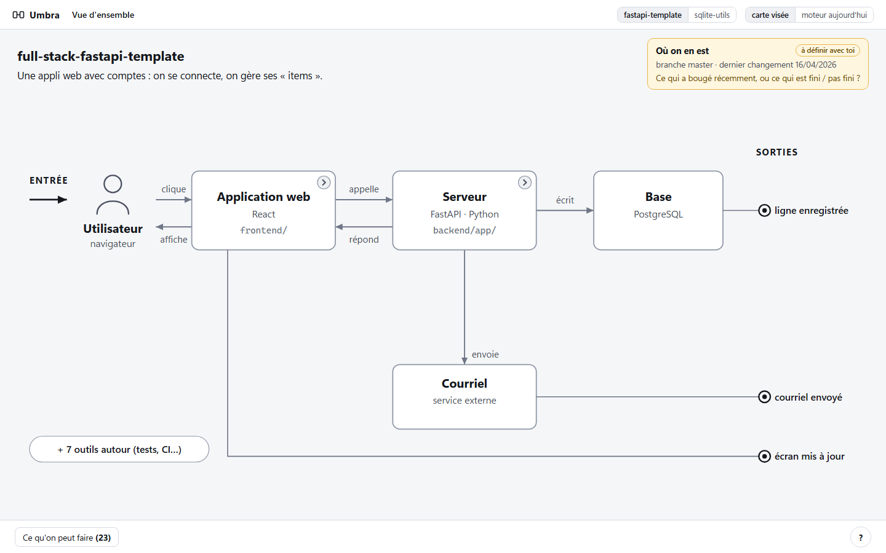
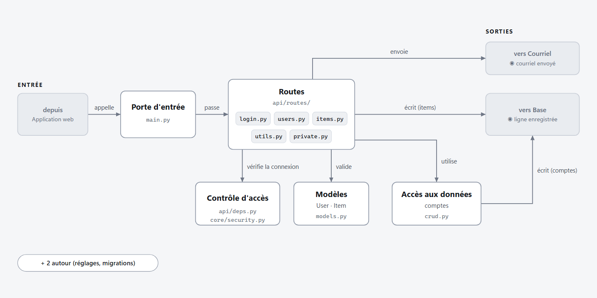
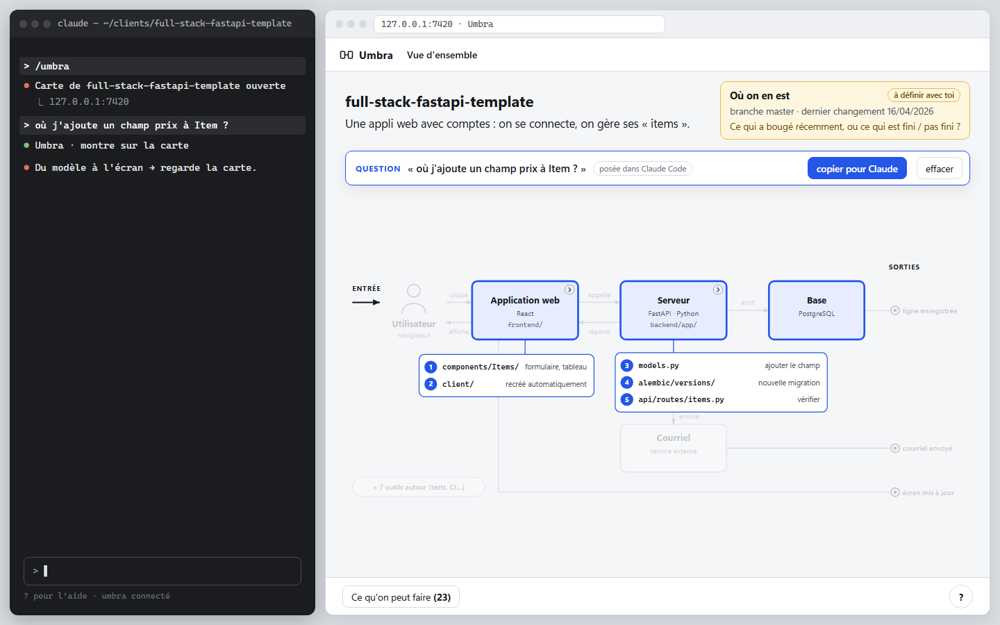
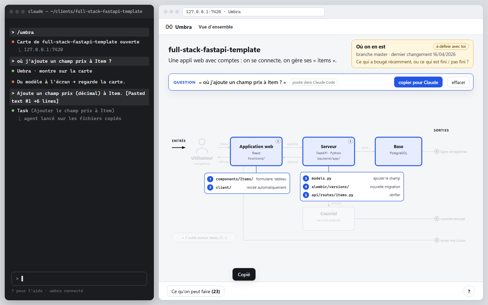
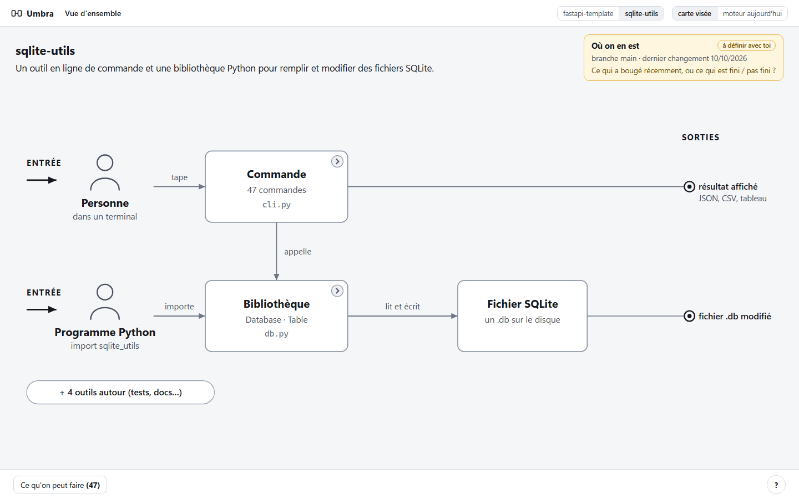
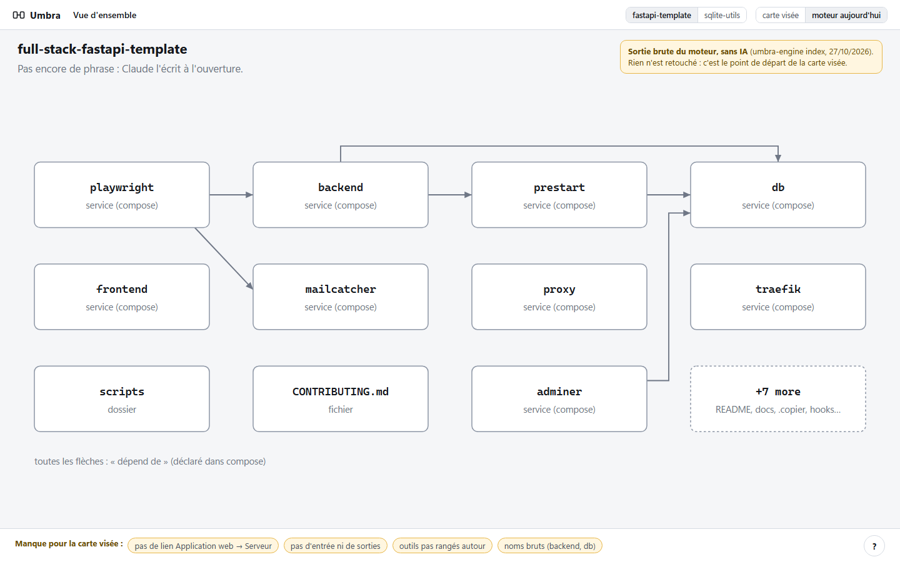

Comment ça marche
Lundi, nouveau client. À gauche ton terminal Claude Code, à droite la carte du projet. Ouvrir la maquette cliquable →
La carte
Tu tapes /umbra : l'entrée à gauche, les boîtes, les sorties à droite. En 10 secondes, tu sais ce que fait le projet.

Dans une boîte
Clic sur Serveur : ses parties, puis une carte de 4 lignes. Tu ne lis pas de code, tu zoomes.

La question dessinée
Tu demandes « où j'ajoute un champ prix ? », Claude répond en une ligne et 5 endroits s'allument. Le terminal parle, la carte montre.

La tâche pour l'agent
Tu cliques « copier pour Claude » et tu lances l'agent sur ces fichiers. Tu décides l'architecture, l'agent code.

Un autre projet
sqlite-utils, sans serveur ni compose : une commande et une bibliothèque. Même carte, même lecture.

Le moteur aujourd'hui
Sans IA, il trouve les services et les liens déclarés. L'entrée, les sorties et les noms restent à construire.

Une question pour toi
« Où on en est », pour toi, c'est quoi ?
- Ce qui a bougé récemment : changements, branches et PR en cours.
- Ce qui est fini et ce qui ne l'est pas dans le projet.